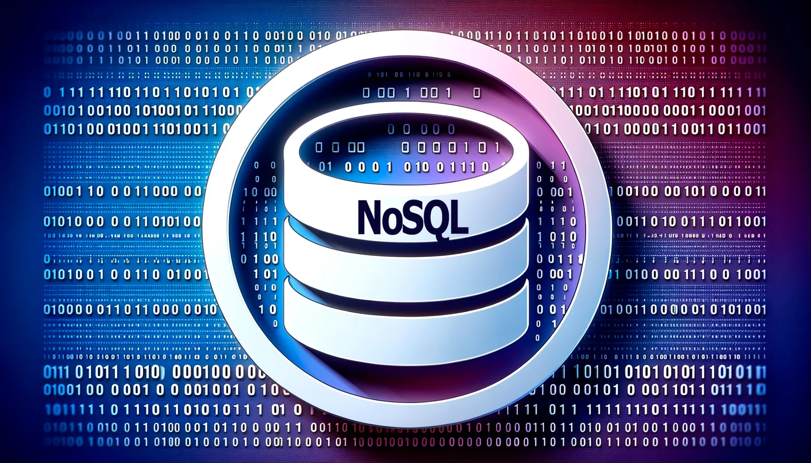

NoSQL - Base de Datos No Relacional
La base de datos NoSQL permite almacenar y recuperar datos de forma flexible sin seguir un modelo de tabla relacional.
Las bases de datos NoSQL son un tipo de sistema de base de datos que difiere de los sistemas de gestión de bases de datos relacionales tradicionales (RDBMS) al no utilizar un esquema tabular para almacenar datos. Ofrecen un enfoque más flexible para el almacenamiento y recuperación de datos, permitiendo que datos estructurados, no estructurados y semi-estructurados se almacenen de manera eficiente. NoSQL, que significa "no solo SQL" o "no SQL", proporciona beneficios como escalabilidad, rendimiento superior, modelos de datos flexibles y facilidad de uso, especialmente en entornos de computación en la nube.
Las bases de datos NoSQL vienen en varios tipos, incluidos almacenes de documentos, bases de datos clave-valor, almacenes de columnas amplias, bases de datos de gráficos y bases de datos multi-modelo. Estas bases de datos han ganado popularidad debido a su capacidad para manejar eficazmente diferentes tipos de datos, lo que las hace adecuadas para aplicaciones modernas que requieren flexibilidad en la modelización de datos y escalabilidad.
Explora los diferentes tipos de bases de datos NoSQL y sus características para encontrar la solución adecuada para tus necesidades.
